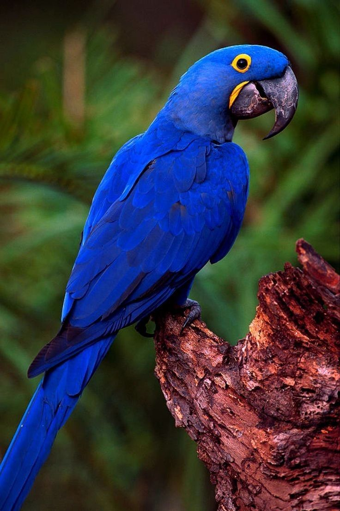

caracteristicas
Relevo
- Cordilheira dos Andes (Oeste): Cadeia montanhosa jovem, alta e instável, que atravessa
o
continente de norte a sul na borda do Pacífico.
- Planaltos Antigos (Leste e Norte): Formações geológicas muito velhas e desgastadas pela
erosão, como o Planalto Brasileiro e o Planalto das Guianas.
- Grandes Planícies (Centro): Áreas baixas e planas situadas entre os Andes e os
planaltos,
dominadas pelas bacias dos rios Amazonas, Paraná e Paraguai.
- depressões: Áreas mais baixas que o terreno ao redor, comuns nas bordas das grandes
bacias
sedimentares.
.jpg)
.jpg)
.jpg)
Solo
- Latossolos:Muito comuns em áreas tropicais (ex: Amazônia e Cerrado) Profundos, bem
drenados, porém pobres em nutrientes
- Argissolos: Apresentam acúmulo de argila em camadas mais profundas, Fertilidade
variável
Principais países
- Argentina
- Brasil
- Colômbia
- Venezuela
- Paraguai
- Peru
Fauna
- Mamíferos: Onça-pintada (maior felino das Américas), boto-cor-de-rosa, tamanduá-bandeira, anta, lobo-guará, mico-leão-dourado e capivara.
- Aves: Arara-azul, arara-canindé, tucano, ema, papagaio-de-cara-roxa.
